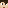
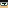
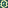
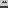

About Quartz's Console
Quartz's Console [Currently in beta]
Modpack by
Quartzmaven

Original modpack by
N00B

Website by
bathtubfulloftoast
Design inspired by
DBTDerpbox
Extra button icons made by
LaffyTaffy
Generic icons taken from
AgentMindStorm
's 
Controller Tooltip Selector Pack.
(Bedrock Addon)
Developer Art+ by
shmoobalizer

Original console UI design by
Julie "Danger" Kennedy
WARNING:
This modpack is currently work-in-progress! Expect some bugs and issues.
You can read the Gitbook
here
.